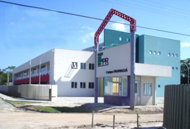

Instituto Federal do Paraná
Campus Paranaguá
O Instituto
O Instituto Federal do Paraná (IFPR) é uma instituição pública federal de ensino vinculada ao Ministério da Educação (MEC) por meio da Secretaria de Educação Profissional e Tecnológica (SETEC). É voltada a educação superior, básica e profissional, especializada na oferta gratuita de educação profissional e tecnológica nas diferentes modalidades e níveis de ensino.
A instituição foi criada em dezembro de 2008 através da Lei 11.892, que instituiu a Rede Federal de Educação Profissional e Tecnológica e os 38 institutos federais hoje existentes no país. Com a Lei em vigor, a Escola Técnica da Universidade Federal do Paraná (ET-UFPR) foi transformada no IFPR, que hoje possui autonomia administrativa e pedagógica.
O IFPR está presente nas cidades: Assis Chateaubriand, Campo Largo, Cascavel, Curitiba, Foz do Iguaçu, Irati, Ivaiporã, Jacarezinho, Londrina, Palmas, Paranaguá, Paranavaí, Telêmaco Borba, Umuarama.
Também está em fase de implantação nas cidades: Pinhais, Pitanga, União da Vitória, Jaguariaíva, Colombo, Capanema (3ª fase de ampliação da Rede Federal de Educação Profissional, Científica e Tecnológica).

Além dos campi, o IFPR está implantando as Unidades de Educação Profissional (UEP). São unidades especializadas na oferta de ensino técnico, cursos de formação inicial e continuada e de Educação a Distância, atendendo prioritariamente as ações que integram o Programa Nacional de Acesso ao Ensino Técnico e Emprego (Pronatec).
Vinculadas aos campi, as UEPs do IFPR estarão presentes em oito municípios: Astorga, Goioerê, Quedas do Iguaçu, Coronel Vivida, Barracão, Bandeirantes, Guaíra e Lapa.
Desenvolvido por: Adriano Yasuda